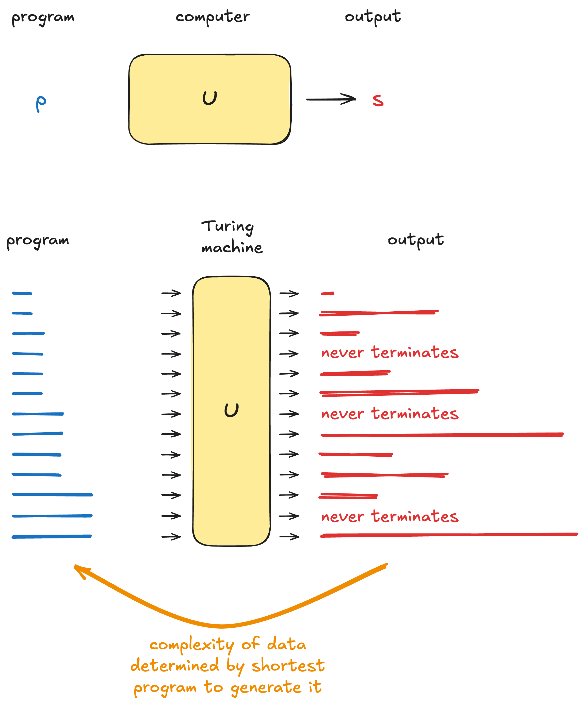

Algorithmic Information Dynamics
author: Hector Zenil, Narsis Kiani & Jesper Tegner

Book summary
To explain the world, one needs a causal model. This means that when observing data, a DNA string, a time series, a text, a graph, etc, one has to find the process that can generate this data. Any data-generating model is, in practice, a computer program. For any piece of data, there are an infinite number of programs that can generate it. For example, a source code file containing a print statement that outputs our data does the trick. It is immediately clear that such a program would not satisfy us, nor would it explain the data. Intuitively, when you have a large dataset, which can be generated with a small program or model, it holds a lot of explanatory power. This is the idea behind Occam’s razor: preferring the simplest model for one’s data. Conversely, if it is not possible to find something smaller than just printing your data (meaning the length of your source code is about the length of the data), it might be an indication that your data is “random”. A simple example is the number \(\pi\), of which a simple program can generate as many digits as one would like, whereas a very long series of die roll outcomes can only be recorded, not computed. This is the idea behind Algorithmic Information Dynamics, the framework that Zenil and co-authors propose for understanding (living) systems. The keyword is compression: reducing data as much as possible with a computer program.
The framework presented in this book is based on algorithmic information theory, rather than statistical information theory, which merely searches for repetitions in the data, rather than general structures. Algorithmic information theory (AIT) is a surprisingly simple concept to grasp the main idea, but it has profound implications for computer science, mathematics, physics, biology, and science in general. It builds upon a Turing machine, the mathematical idealization of a computer. Any computer that can run a programming language such as Python can be used for the thought experiment, as it is a good approximation of the mathematical ideal. Any input to a computer is merely a text file (e.g., running a Python script), and there is only a finite number of source code files of a given length (2 to the power of the file size in bits). Rather than executing a specific program, we might run all possible source code files in lexicographic order. We start with the shortest file that runs (likely something like a=1) and record the output. Here, we can skip files with syntactic errors, as these are easy to detect. Each program will have an output, which will initially be simple, but once it is long enough to contain for and while loops, the output might be substantially longer than the input source code. It does not take very long programs to generate mathematical constants or things like palindromes. If we run enough programs, anything will be generated, ranging from computer simulations of atomic physics to all of Shakespeare’s works to a rendering of Avatar 4: Earth and Bone. This well-defined process will produce a distribution over all possible data, which we can think of as a universal prior distribution. Whatever we see earlier is simple (generated by short programs), while later outputs are more complex. Though generating a movie will require a complex computer program, the generating program is no doubt vastly shorter than the final movie file. Interestingly, there are only a limited number of short programs (say, of a megabyte), while there are many, many larger files (say, of a Gigabyte). This means that most data files cannot have a short generating program, making them algorithmically random. Every piece of data or media we like is a fleck of structure in a huge beach of randomness.

There are two critical remarks about the explanation above, one rather nice and the other not so much. My thought experiment assumed that we run all Python programs; does everything still hold if we use C, Rust, or Julia? What about using a more rigorously defined, but much less enjoyable-to-program, Turing machine? The good news is that yes, it is all (approximately equivalent). The complexity of outputs is the same, whether they are run in Python or some other language, because they are all Turing equivalent and have the same power. This is called the Invariance Theorem. Data that is simple (can be generated by a short input program) in Python will also be simple on any other computing platform. Measured in code length, there will only be a constant conversion factor needed to translate the code from language A to language B. This means that complexity, measured in minimal code length, is something universal.
Now, for the bad news. Running all computer programs up to a certain length might, while not possible in practice, be conceptually feasible by assuming a very large amount of computational resources. Sadly, it cannot even be done in theory, as some of the programs we will encounter might not even run very long; they might run forever and never halt! Though it is possible to sometimes detect whether a program will run forever (for example, it contains while True), in general, the logic might be so complex that it is impossible to determine. This is the famous Halting Problem, which states that no program can determine whether any program will terminate within a finite time or run forever. So, AIT is simple to understand, universal, well-defined, and computationally intractable. Much research is now being conducted on how to use it to solve practical problems.
To put it a bit more rigorously, the Kolmogorov complexity of a string \(s\) is defined as the shortest program \(p\) to generate it using a Turing machine \(U\):
\[K(s):= \min_{p:U(p)=s} |p|\,.\]
Algorithmically random strings then have: \(K(s)\approx |s|\). We can link probability (and hence priors) to algorithmic complexity by evaluating random programs in a Monte Carlo style! This is done by randomly generating program strings and evaluating them, yielding the algorithmic probability:
\[m(s) :=\sum_{p:U(p)=s} \frac{1}{2^{|p|}}\,.\]
Though strings can be generated by programs of many different lengths, the shortest ones will dominate this probability, so we have that
\[K(s) \approx-\log m(s)\,,\]
which is called the coding theorem. The difference is merely factor of \(\mathcal{O}(1)\).
The authors of Algorithmic Information Dynamics use these ideas to estimate the Kolmogorov complexity of sequences and images. For small datasets, they use the Coding Theory Method (CTM), which is based on the above coding theorem. They run millions of programs (using execution-time thresholds to terminate those that might run forever) to create a database of how frequently each output is obtained. These probabilities can be turned into good estimates of the Kolmogorov complexity. For larger pieces of data (DNA strings or images), they glue these complexities of the smaller pieces together using statistical information theory, using the Block Decomposition Method (BDM) in a divide-and-conquer fashion. Based on CTM, the BDM method is defined as
\[\text{BDM}(s)= \sum_i\text{CTM}(s_i)+\log n_i\]
where we decompose the string \(s\) into substrings \(s_i\), where we compute the complexity using CTM and correct for repetitions using \(n_i\) (we only have to invent a substring once). In other words, a long string is simple if it is made up of simple and repeating substrings!
With a practical way of assessing complexity behind the belt, it is now possible to reason about causality and the generative process of objects. The main idea they use it to break the data up into several pieces (for example, removing a link in a network) and see how this influences the complexity. This can be used to generate causally independent subnetworks into graphs using a perturbation analysis. One could imagine using this to segment genomes to identify evolutionary and functionally distinct regions, or using it to explore images. The strength of this work is that it turns the theoretically sound AIT framework into a practical and powerful tool for analysing data. It is a formal, universal, and practical approach to model discovery, hypothesis testing, and causal analysis. Expanding on this, exploring how it can be used to analyse biology (e.g., finding causal associations, understanding evolution…) could be highly fruitful. I am still not entirely convinced that AIT is the correct way to approach such a problem, as it assumes the existence of a highly complicated object - a Turing machine - as a precondition for generating data. Rather than exploring the space of random programs (which can only be short), it might be more relevant to explore the program space in a more systematic way, as in generative programming and program synthesis. It does seem that finding algorithmic descriptions of complex objects is the way forward.
Who is this for?
This is a rather technical book. The first parts give a general philosophical overview of the different approaches of science and explain the difference between AIT and statistical information theory well. The remainder builds upon the more extended framework, which is still very novel and might need some iterations to be in its most accessible form.